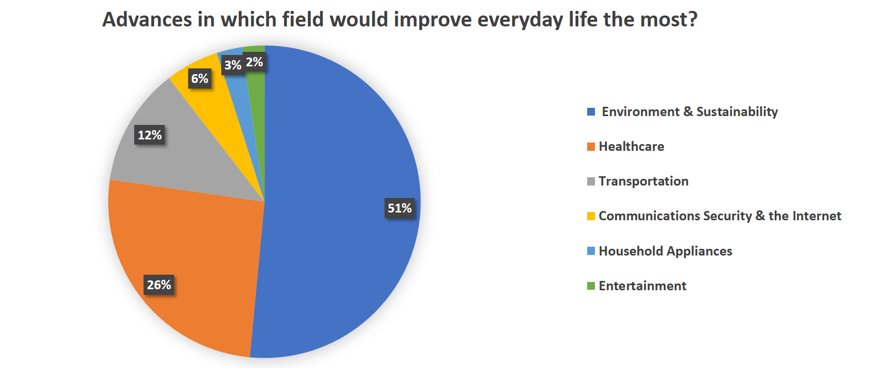
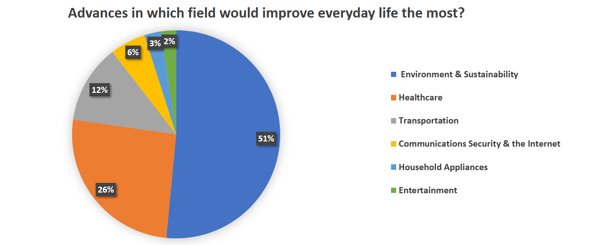

We put an online poll at the University of Bristol homepage with the question "Which aspect of our everyday life do you want to see improved the most by technology in the next 20 years?". It received 2433 responses of which 78% are from undergraduates, 15% from postgraduate and 10% from staff members (numbers don't add due to overlap). The majority of respondents (51%) consider environment and sustainability as the most important target for technological improvement, followed by healthcare (24%) and transportation (16%). The distribution of answers between the three groups follow the overall trend which is shown in the pie chart below.

